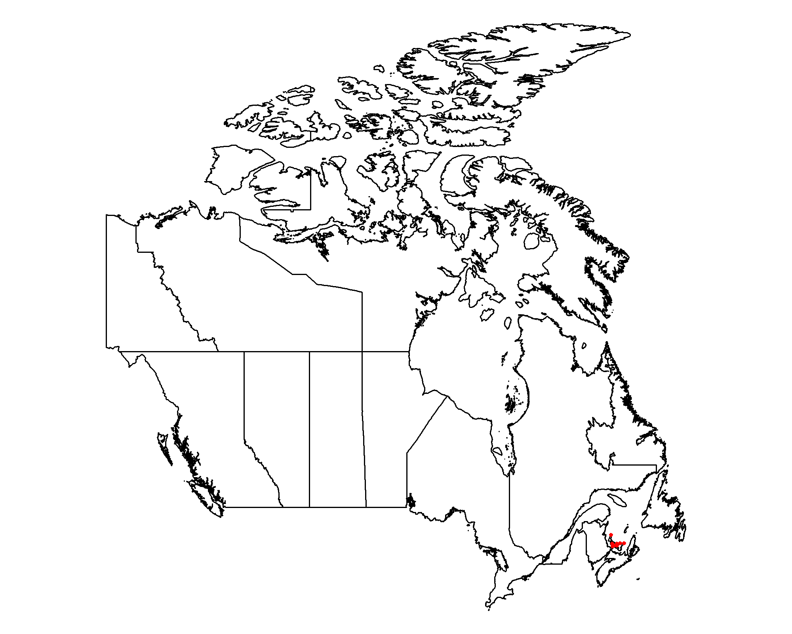
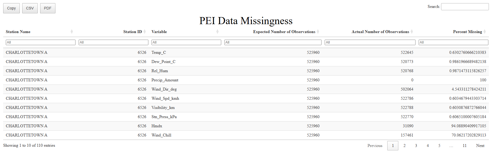
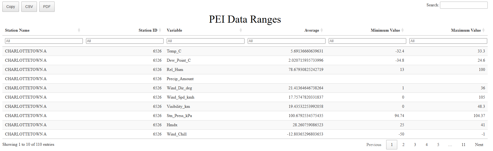
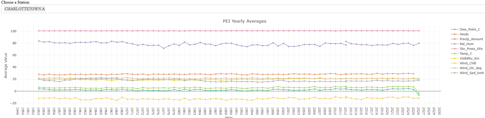
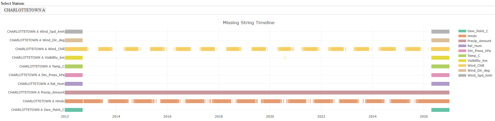
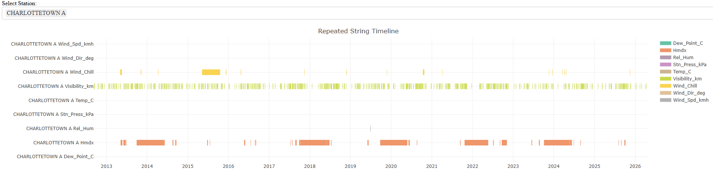
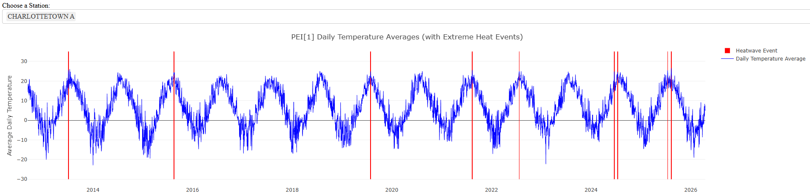

Example Workflow
castform-example-workflow.RmdBelow is an example of a typical end-to-end workflow using the castform package to analyze historic weather station data from Prince Edward Island, Canada.
(1) Download the latest station inventory
Make sure that we are working with the most up-to-date station inventory list from Environment Canada
(2) Look up the stations available in Prince Edward Island
Summarize stations in our province of interest to ensure that there is enough data to complete an analysis on.
PE_stations <- station_lookup(province = "prince edward island")
c("Number of stations" = nrow(PE_stations),
"Earliest Collection Year" = min(PE_stations$HLY.First.Year),
"Latest Collection Year" = max(PE_stations$HLY.Last.Year))## Number of stations Earliest Collection Year Latest Collection Year
## 11 1953 2026From the station look-up, there are 83 weather stations in Nova Scotia with data available in varying ranges from 1953 to 2026.
(3) Test Download with One File
Before committing, we will test our downloads by downloading the first month of available data from the first station (Station Name = “CHARLOTTETOWN A” ; Station ID = 6526)
get_single_station_file(station_id = 7103,
root_folder = "castform_outputs")(4) Download Province Stations
Now that we ensure the download works and creates the directory in the correct place, we can move onto the pull province download.
province_station_files(province = "prince edward island",
root_folder = "castform_outputs")(5) Create the Database
Next, we can create an sqlite database to store downloaded data and allow for analysis through queries.
build_station_database(db_name = "PEI",
root_folder = "castform_outputs/PRINCE_EDWARD_ISLAND,
output_dir = "castform_outputs")Before continuing, we must validate the created database
(NS_database.sqlite) to ensure that the data is stored with
the proper schema.
validate_database(db_name = "PEI",
db_dir = "castform_outputs")## Database not found. Please double check the entered database name, the database directory, and ensure the build_station_database function finished successfully.(6) Exploratory Data Analysis
Now we can explore the downloaded data.
(6a) Station Map
First, we will create a map to visualize the stations we are working with.
station_map(db_name = "PEI",
db_dir = "castform_outputs",
output_dir = "castform_outputs",
metadata_stations = FALSE)
(6b) Data Missingness
Next, we can create a table that summarizes how much data is missing within the variables of each station.
data_missingness_table(db_name = "PEI",
db_dir = "castform_outputs",
output_dir = "castform_outputs",
write_csv = TRUE)
(6c) Data Ranges
Next, we can create a table that summarizes how much data is average, minimum, and maximum values of each variable of each station.
data_ranges(db_name = "PEI",
db_dir = "castform_outputs",
output_dir = "castform_outputs/PEI_outputs",
write_csv = TRUE)
(6f) Visualize Yearly Means
Next, we can create a plot that visualizes the means of each station vairable over time. This can also help identify which years of data are missing in each station.
plot_yearly_means(db_name = "PEI",
db_dir = "castform_outputs",
output_dir = "castform_outputs",
write_csv = TRUE)
(6e) Visualize Missing Strings
Next, we can create a table and plot that identifies when strings of missing variable data occurred. This allows us to see exactly what hour the missing data starts and see how long it was missing for.
NOTE: This output takes long to load on a large dataset so it was run on a subset of the database (only one station)
pull_missing_strings(db_name = "PEI",
db_dir = "castform_outputs",
output_dir = "castform_outputs",
write_csv = TRUE)
(6f) Visualize Repeated Strings
Last, we can create a table and plot that identifies when strings of repeated and identical data strings occurred. This allows us to see exactly what hour the repetition starts and see how long it lasts. This helps identify faulty machinery that may impact that reliability of our data.
NOTE: This output takes long to load on a large dataset so it was run on a subset of the database (only one station)
pull_repeated_strings(db_name = "PEI",
db_dir = "castform_outputs",
output_dir = "castform_outputs",
write_csv = TRUE)
(7) Detect Heat Waves
After we have explored our data, understand its organization, and are aware of its flaws, we can use it to detect extreme heat wave events in historical data.
heatwave_detector(db_name = "PEI",
db_dir = "castform_outputs",
output_dir = "castform_outputs",
write_csv = TRUE)